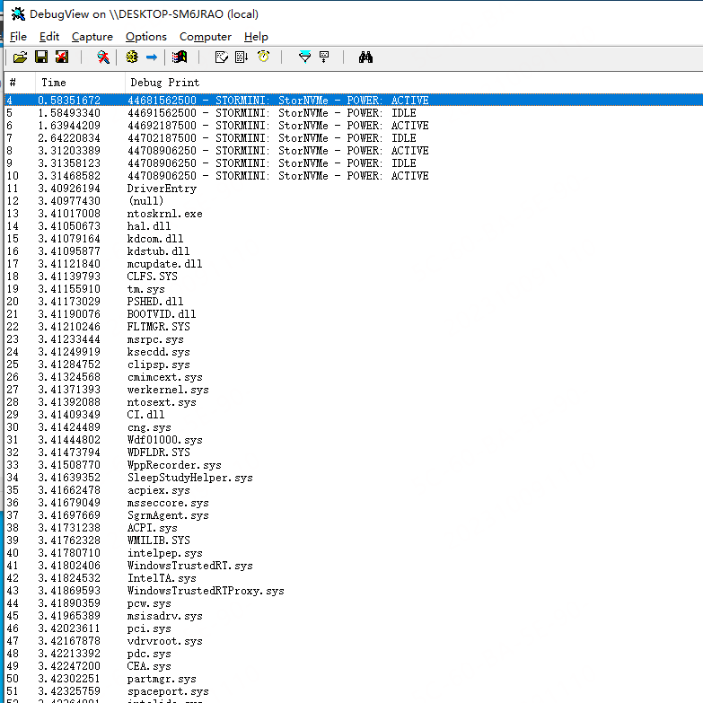

概述：内核遍历模块名称
0x01、查看LDR
Windows 内核模块信息是以结构体 _LDR_DATA_TABLE_ENTRY 形式存在于系统。 _LDR_DATA_TABLE_ENTRY 的基地址在 PEB当中，以下为是一个示例查看 _LDR_DATA_TABLE_ENTRY 结构体的示例：
环境：windows双机调试，调试环境 win10. 调试，目标 notepad.exe
-
获取进程id
0: kd> !process 0 0 notepad.exe PROCESS ffffc6835560a080 SessionId: 1 Cid: 167c Peb: 88dcc01000 ParentCid: 1ad8 DirBase: 6590e000 ObjectTable: ffffdd03a141b380 HandleCount: 520. Image: notepad.exe -
获取LDR
0: kd> .process /p ffffc6835560a080; !peb 88dcc01000 Implicit process is now ffffc683`5560a080 .cache forcedecodeuser done PEB at 00000088dcc01000 InheritedAddressSpace: No ReadImageFileExecOptions: No BeingDebugged: No ImageBaseAddress: 00007ff613310000 NtGlobalFlag: 0 NtGlobalFlag2: 0 Ldr 00007ffb244fc4c0 Ldr.Initialized: Yes Ldr.InInitializationOrderModuleList: 000001acec0f24f0 . 000001acf1b23db0 Ldr.InLoadOrderModuleList: 000001acec0f2660 . 000001acf1b23d90 Ldr.InMemoryOrderModuleList: 000001acec0f2670 . 000001acf1b23da0 Base TimeStamp Module 7ff613310000 52b5327b Dec 21 14:17:31 2013 C:\Windows\system32\notepad.exe 7ffb24390000 feef31d3 Jul 15 16:12:03 2105 C:\Windows\SYSTEM32\ntdll.dll 7ffb23b40000 23c0ab5e Jan 03 19:15:42 1989 C:\Windows\System32\KERNEL32.DLL 7ffb21ae0000 6b4de7c9 Jan 18 18:22:01 2027 C:\Windows\System32\KERNELBASE.dll 7ffb233f0000 7086f0b5 Oct 28 22:20:37 2029 C:\Windows\System32\GDI32.dll 7ffb21de0000 0dcd0213 May 04 04:26:59 1977 C:\Windows\System32\win32u.dll 7ffb21f00000 d31e9fa0 Mar 29 16:45:20 2082 C:\Windows\System32\gdi32full.dll 7ffb21e10000 39255ccf May 19 23:25:03 2000 C:\Windows\System32\msvcp_win.dll 7ffb22180000 2bd748bf Apr 23 09:39:11 1993 C:\Windows\System32\ucrtbase.dll 7ffb22850000 12e47419 Jan 17 20:56:57 1980 C:\Windows\System32\USER32.dll 7ffb23090000 ab88b7a1 Mar 12 22:37:21 2061 C:\Windows\System32\combase.dll 7ffb236b0000 ed79d6e2 Apr 02 14:04:18 2096 C:\Windows\System32\RPCRT4.dll 7ffb238c0000 29534f79 Dec 21 22:28:09 1991 C:\Windows\System32\shcore.dll 7ffb235f0000 564f9f39 Nov 21 06:31:21 2015 C:\Windows\System32\msvcrt.dll 7ffb20490000 db2b08ef Jul 09 13:23:59 2086 C:\Windows\WinSxS\amd64_microsoft.windows.common-controls_6595b64144ccf1df_6.0.19041.1110_none_60b5254171f9507e\COMCTL32.dll 7ffb23050000 68ff10be Oct 27 14:27:10 2025 C:\Windows\System32\IMM32.DLL 5e050000 627c7a26 May 12 11:08:22 2022 C:\Program Files (x86)\360\360Safe\safemon\SafeWrapper.dll 7ffb223f0000 c9418262 Dec 30 08:27:14 2076 C:\Windows\System32\ADVAPI32.dll 7ffb224a0000 9003cbde Jul 26 05:45:02 2046 C:\Windows\System32\sechost.dll 7ffb217a0000 618b690d Nov 10 14:39:09 2021 C:\Program Files (x86)\360\360Safe\safemon\capid64.dll 7ffb237e0000 19bb5737 Sep 06 22:52:39 1983 C:\Windows\System32\SHLWAPI.dll 7ffb21760000 63e49296 Feb 09 14:28:38 2023 C:\Program Files (x86)\360\360EDRSensor\safemon\360EFP64.dll 7ffb21740000 f0713fcd Oct 30 14:42:21 2097 C:\Windows\SYSTEM32\kernel.appcore.dll 7ffb222b0000 856685b0 Dec 03 03:17:04 2040 C:\Windows\System32\bcryptPrimitives.dll 7ffb1e4f0000 16108836 Sep 24 20:23:18 1981 C:\Windows\system32\uxtheme.dll 7ffb23970000 a7c9263e Mar 16 02:13:18 2059 C:\Windows\System32\clbcatq.dll 7ffb18890000 0b3246d4 Dec 15 10:58:28 1975 C:\Windows\System32\MrmCoreR.dll 7ffb23c00000 480c18d7 Apr 21 12:32:23 2008 C:\Windows\System32\SHELL32.dll 7ffb1eac0000 7521c788 Apr 10 02:27:20 2032 C:\Windows\SYSTEM32\windows.storage.dll 7ffb20ec0000 db45726f Jul 29 14:13:03 2086 C:\Windows\system32\Wldp.dll 7ffb23a20000 0e8d3a56 Sep 26 23:42:14 1977 C:\Windows\System32\MSCTF.dll 7ffb225d0000 d42edff1 Oct 22 04:56:17 2082 C:\Windows\System32\OLEAUT32.dll 7ffb14380000 63a36c45 Dec 22 04:27:49 2022 C:\Windows\system32\TextShaping.dll 7ffafdbb0000 97acfd33 Aug 21 20:10:27 2050 C:\Windows\System32\efswrt.dll 7ffb0fb70000 0d302819 Jan 05 05:03:21 1977 C:\Windows\System32\MPR.dll 7ffb1d420000 1b27f2ab Jun 09 12:20:59 1984 C:\Windows\SYSTEM32\wintypes.dll 7ffb1b3f0000 60d2769c Jun 23 07:47:40 2021 C:\Windows\System32\twinapi.appcore.dll 7ffb20e30000 24cdd509 Jul 26 23:13:13 1989 C:\Windows\System32\oleacc.dll 7ffb18640000 f0c41b7e Jan 01 11:05:34 2098 C:\Windows\SYSTEM32\textinputframework.dll 7ffb1db70000 ce358de3 Aug 19 04:30:27 2079 C:\Windows\System32\CoreUIComponents.dll 7ffb1ded0000 d76cf31a Jul 12 19:59:22 2084 C:\Windows\System32\CoreMessaging.dll 7ffb22780000 aff3315b Jul 18 10:18:03 2063 C:\Windows\System32\WS2_32.dll 7ffb215c0000 3d60ad04 Aug 19 16:32:04 2002 C:\Windows\SYSTEM32\ntmarta.dll 7ffb22ec0000 2f888521 Apr 10 09:08:49 1995 C:\Windows\System32\ole32.dll 7ffb226a0000 20677495 Mar 25 14:09:25 1987 C:\Windows\System32\comdlg32.dll 7ffb1d320000 332d6f47 Mar 18 00:20:23 1997 C:\Windows\system32\PROPSYS.dll 7ffaf0910000 55510662 May 12 03:43:30 2015 C:\Windows\System32\DUI70.dll 7ffaf0870000 3edb1f69 Jun 02 17:56:57 2003 C:\Windows\System32\DUser.dll 7ffb1e7d0000 7ecc0a11 May 30 20:58:57 2037 C:\Windows\System32\dwmapi.dll 7ffb05360000 b95c5d4e Jul 18 19:55:58 2068 C:\Windows\system32\explorerframe.dll 7ffb1b110000 1fcf100d Nov 29 23:55:57 1986 C:\Windows\system32\WindowsCodecs.dll 7ffb22280000 9723b943 May 09 17:20:03 2050 C:\Windows\System32\bcrypt.dll 7ffb219a0000 62b75706 Jun 26 02:42:14 2022 C:\Windows\system32\profapi.dll 7ffb052f0000 3aad9df3 Mar 13 12:11:31 2001 C:\Windows\System32\thumbcache.dll 7ffb1be70000 223f725e Mar 17 14:29:50 1988 C:\Windows\SYSTEM32\policymanager.dll 7ffb202e0000 f390ead1 Jun 29 04:13:05 2099 C:\Windows\system32\msvcp110_win.dll 7ffb055b0000 49f7aa8e Apr 29 09:17:02 2009 C:\Windows\system32\dataExchange.dll 7ffb1c650000 e193dcb4 Dec 05 03:44:52 2089 C:\Windows\system32\d3d11.dll 7ffb1d580000 05174257 Sep 15 21:06:31 1972 C:\Windows\system32\dcomp.dll 7ffb1f390000 e3f3eb09 Mar 11 09:04:09 2091 C:\Windows\system32\dxgi.dll 7ffaf0820000 ca7e2859 Aug 27 12:51:37 2077 C:\Windows\System32\Windows.UI.FileExplorer.dll 7ffb052c0000 be357357 Feb 15 05:12:55 2071 C:\Windows\system32\edputil.dll 7ffb21eb0000 1ede815d May 31 12:43:09 1986 C:\Windows\System32\CFGMGR32.dll 7ffb13cd0000 f30ed2fb Mar 22 11:56:43 2099 C:\Windows\System32\Windows.FileExplorer.Common.dll 7ffb17050000 724543b6 Oct 02 11:25:42 2030 C:\Windows\System32\iertutil.dll 7ffb1e3c0000 c42be918 Apr 18 01:34:16 2074 C:\Windows\SYSTEM32\atlthunk.dll 7ffb16670000 da4754f3 Jan 17 20:11:31 2086 C:\Windows\System32\StructuredQuery.dll 7ffb0d2f0000 c8e913db Oct 24 06:36:11 2076 C:\Windows\System32\Windows.StateRepOSItoryPS.dll 7ffb01680000 61e9c87f Jan 21 04:39:27 2022 C:\Windows\system32\Windows.Storage.Search.dll 7ffb1e3d0000 3ffe0471 Jan 09 09:31:29 2004 C:\Windows\system32\LINKINFO.dll 7ffb21950000 441329cb Mar 12 03:49:31 2006 C:\Windows\system32\SspiCli.dll 7ffae9d40000 e3a65137 Jan 11 12:23:19 2091 C:\Program Files\Common Files\microsoft shared\ink\tiptsf.dll 7ffb23840000 a2ae2189 Jun 27 16:40:41 2056 C:\Windows\System32\coml2.dll 7ffb07d90000 3f50139a Aug 30 11:01:46 2003 C:\Windows\System32\twinapi.dll 7ffb1e3e0000 9d68abf2 Sep 08 02:31:14 2053 C:\Windows\system32\apphelp.dll 7ffb22a50000 7680a595 Jan 01 05:48:05 2033 C:\Windows\System32\SETUPAPI.dll 7ffb21890000 14531102 Oct 21 22:56:02 1980 C:\Windows\SYSTEM32\VERSION.dll 7ffb055f0000 6a605d4a Jul 22 14:03:54 2026 C:\Windows\system32\cldapi.dll 7ffb21600000 2ea9f33d Oct 23 13:23:09 1994 C:\Windows\system32\FLTLIB.DLL 7ffb13620000 cfe5ad8c Jul 11 23:04:44 2080 C:\Users\holdy\AppData\Local\Microsoft\OneDrive\23.189.0910.0001\FileSyncShell64.dll 7ffb22020000 884d1633 Jun 19 09:15:31 2042 C:\Windows\System32\CRYPT32.dll 7ffb0c940000 42b0d806 Jun 16 09:38:14 2005 C:\Windows\SYSTEM32\WININET.dll 7ffb1fe00000 7aec0e44 May 09 10:28:20 2035 C:\Windows\SYSTEM32\Secur32.dll 7ffb1d7a0000 5e1a2a61 Jan 12 04:04:49 2020 C:\Windows\SYSTEM32\WTSAPI32.dll 7ffb21920000 ccba460f Nov 04 11:54:55 2078 C:\Windows\SYSTEM32\USERENV.dll 7ffb20d30000 28e89a43 Oct 01 23:54:43 1991 C:\Windows\system32\CRYPTBASE.DLL 7ffb18e60000 75e918f4 Sep 08 06:55:48 2032 C:\Windows\System32\EhStorShell.dll 7ffb13b40000 a373b917 Nov 24 13:43:51 2056 C:\Windows\SYSTEM32\ntshrui.dll 7ffb140f0000 8c31e680 Jul 14 11:41:52 2044 C:\Windows\System32\cscui.dll 7ffb16cd0000 5430eec3 Oct 05 15:09:55 2014 C:\Windows\system32\srvcli.dll 7ffb0bc50000 31063a34 Jan 24 21:55:00 1996 C:\Windows\system32\cscapi.dll 7ffb18ea0000 b8ca2d77 Mar 29 22:40:55 2068 C:\Windows\system32\WINMM.dll 7ffb1d7c0000 13731e9b May 05 02:06:19 1980 C:\Windows\system32\mssprxy.dll 7ffb16d00000 7499a51d Dec 28 20:12:13 2031 C:\Windows\System32\urlmon.dll 7ffb20d90000 fcf57d1b Jun 27 02:06:19 2104 C:\Windows\System32\netutils.dll 7ffb1e380000 499386c1 Feb 12 10:17:37 2009 C:\Windows\system32\NetworkExplorer.dll SubSystemData: 00007ffb1b5cf1d0 ProcessHeap: 000001acec0f0000 ProcessParameters: 000001acec0f1c90 CurrentDirectory: 'C:\Users\holdy\' WindowTitle: 'C:\Windows\system32\notepad.exe' ImageFile: 'C:\Windows\system32\notepad.exe' CommandLine: '"C:\Windows\system32\notepad.exe" ' DllPath: '< Name not readable >' Environment: 000001acec0f0fe0 =::=::\ ALLUSERSprofile=C:\ProgramData APPDATA=C:\Users\holdy\AppData\Roaming CLASSPATH=C:\Program Files\Java\jdk-17\lib CommonProgramFiles=C:\Program Files\Common Files CommonProgramFiles(x86)=C:\Program Files (x86)\Common Files CommonProgramW6432=C:\Program Files\Common Files COMPUTERNAME=DESKTOP-SM6JRAO ComSpec=C:\Windows\system32\cmd.exe DriverData=C:\Windows\System32\Drivers\DriverData HOMEDRIVE=C: HOMEPATH=\Users\holdy JAVA_HOME=C:\Program Files\Java\jdk-17 LOCALAPPDATA=C:\Users\holdy\AppData\Local LOGONSERVER=\\DESKTOP-SM6JRAO NUMBER_OF_PROCESSORS=2 OneDrive=C:\Users\holdy\OneDrive OneDriveConsumer=C:\Users\holdy\OneDrive OS=Windows_NT Path=%JAVA_HOME%\bin;C:\Program Files\Java\jdk-17\bin;C:\Windows\system32;C:\Windows;C:\Windows\System32\Wbem;C:\Windows\System32\WindowsPowerShell\v1.0\;C:\Windows\System32\OpenSSH\;C:\Users\holdy\AppData\Local\Microsoft\WindowsApps; PATHEXT=.COM;.EXE;.BAT;.CMD;.VBS;.VBE;.JS;.JSE;.WSF;.WSH;.MSC PROCESSOR_ARCHITECTURE=AMD64 PROCESSOR_IDENTIFIER=Intel64 Family 6 Model 140 Stepping 1, GenuineIntel PROCESSOR_LEVEL=6 PROCESSOR_REVISION=8c01 ProgramData=C:\ProgramData ProgramFiles=C:\Program Files ProgramFiles(x86)=C:\Program Files (x86) ProgramW6432=C:\Program Files PSModulePath=C:\Program Files\WindowsPowerShell\Modules;C:\Windows\system32\WindowsPowerShell\v1.0\Modules PUBLIC=C:\Users\Public SESSIONNAME=Console SystemDrive=C: SystemRoot=C:\Windows TEMP=C:\Users\holdy\AppData\Local\Temp TMP=C:\Users\holdy\AppData\Local\Temp USERDOMAIN=DESKTOP-SM6JRAO USERDOMAIN_ROAMINGPROFILE=DESKTOP-SM6JRAO USERNAME=holdy USERPROFILE=C:\Users\holdy windir=C:\Windows -
查看LDR
0: kd> dt _LDR_DATA_TABLE_ENTRY 00007ffb244fc4c0 ntdll!_LDR_DATA_TABLE_ENTRY +0x000 InLoadOrderLinks : _LIST_ENTRY [ 0x00000001`00000058 - 0x00000000`00000000 ] +0x010 InMemoryOrderLinks : _LIST_ENTRY [ 0x000001ac`ec0f2660 - 0x000001ac`f1b23d90 ] +0x020 InInitializationOrderLinks : _LIST_ENTRY [ 0x000001ac`ec0f2670 - 0x000001ac`f1b23da0 ] +0x030 DllBase : 0x000001ac`ec0f24f0 Void +0x038 EntryPoint : 0x000001ac`f1b23db0 Void +0x040 SizeOfImage : 0 +0x048 FullDllName : _UNICODE_STRING "" +0x058 BaseDllName : _UNICODE_STRING "" +0x068 FlagGroup : [4] "" +0x068 Flags : 0 +0x068 PackagedBinary : 0y0 +0x068 MarkedForRemoval : 0y0 +0x068 ImageDll : 0y0 +0x068 LoadNotificationsSent : 0y0 +0x068 TelemetryEntryProcessed : 0y0 +0x068 ProcessStaticImport : 0y0 +0x068 InLegacyLists : 0y0 +0x068 InIndexes : 0y0 +0x068 ShimDll : 0y0 +0x068 InExceptionTable : 0y0 +0x068 ReservedFlags1 : 0y00 +0x068 LoadInProgress : 0y0 +0x068 LoadConfigProcessed : 0y0 +0x068 EntryProcessed : 0y0 +0x068 ProtectDelayLoad : 0y0 +0x068 ReservedFlags3 : 0y00 +0x068 DontCallForThreads : 0y0 +0x068 ProcessAttachCalled : 0y0 +0x068 ProcessAttachFailed : 0y0 +0x068 CorDeferredValIDAte : 0y0 +0x068 CorImage : 0y0 +0x068 DontRelocate : 0y0 +0x068 CorILOnly : 0y0 +0x068 ChpeImage : 0y0 +0x068 ReservedFlags5 : 0y00 +0x068 Redirected : 0y0 +0x068 ReservedFlags6 : 0y00 +0x068 CompatDatabaseProcessed : 0y0 +0x06c ObsoleteLoadCount : 0 +0x06e TlsIndex : 0 +0x070 HashLinks : _LIST_ENTRY [ 0x00000000`00000000 - 0x00000000`00000000 ] +0x080 TimeDateStamp : 0x16510000 +0x088 EntryPointActivationContext : 0x00000000`00020000 _ACTIVATION_CONTEXT +0x090 Lock : 0x61db9c30`00000000 Void +0x098 DdagNode : 0x00770073`0002815d _LDR_DDAG_NODE +0x0a0 NodeModuleLink : _LIST_ENTRY [ 0x00690072`00650076 - 0x00340036`00790066 ] +0x0b0 LoadContext : 0x006c006c`0064002e _LDRP_LOAD_CONTEXT +0x0b8 ParentDllBase : (null) +0x0c0 SwitchBackContext : (null) +0x0c8 BaseAddressIndexNode : _RTL_BALANCED_NODE +0x0e0 MappingInfoIndexNode : _RTL_BALANCED_NODE +0x0f8 OriginalBase : 0x61db9c30`00000001 +0x100 LoadTime : _LARGE_INTEGER 0x00770073`0002815d +0x108 BaseNameHashValue : 0x650076 +0x10c LoadReason : 0x690072 (No matching name) +0x110 ImplicitPathOptions : 0x790066 +0x114 ReferenceCount : 0x340036 +0x118 DependentLoadFlags : 0x64002e +0x11c SigningLevel : 0x6c 'l'
0x02、通过驱动程序读取 LDR
上述我们已经知道了 _LDR_DATA_TABLE_ENTRY 的结构体，下一步就可以根据其结构体在驱动程序中读取内核模块了。
cpp
typedef struct _LDR_DATA_TABLE_ENTRY
{
LIST_ENTRY InLoadOrderLinks;
LIST_ENTRY InMemoryOrderLinks;
LIST_ENTRY InInitializationOrderLinks;
PVOID DllBase;
PVOID EntryPoint;
UINT64 SizeOfImage;
UNICODE_STRING FullDllName;
UNICODE_STRING BaseDllName;
}LDR_DATA_TABLE_ENTRY, * PLDR_DATA_TABLE_ENTRY;在驱动进程中，NTSTATUS DriverEntry(PDRIVER_OBJECT DriverObject, UNICODE_STRING RegistryPath) 的 DriverObject 保存了当前驱动的 LDR_DATA_TABLE_ENTRY 地址。
基于这一点，完整的程序代码如下所示：
cpp
#include <wdm.h>
typedef struct _LDR_DATA_TABLE_ENTRY
{
LIST_ENTRY InLoadOrderLinks;
LIST_ENTRY InMemoryOrderLinks;
LIST_ENTRY InInitializationOrderLinks;
PVOID DllBase;
PVOID EntryPoint;
UINT64 SizeOfImage;
UNICODE_STRING FullDllName;
UNICODE_STRING BaseDllName;
}LDR_DATA_TABLE_ENTRY, * PLDR_DATA_TABLE_ENTRY;
VOID DriverUnload(PDRIVER_OBJECT DriverObject)
{
DbgPrint("DriverUnload");
}
NTSTATUS DriverEntry(PDRIVER_OBJECT DriverObject, UNICODE_STRING RegistryPath)
{
NTSTATUS status = STATUS_SUCCESS;
DbgPrint("DriverEntry");
DriverObject->DriverUnload = DriverUnload;
PLDR_DATA_TABLE_ENTRY pDection = DriverObject->DriverSection; //获取当前驱动的LDR_DATA_TABLE_ENTRY地址
PLDR_DATA_TABLE_ENTRY pCurrentDection = pDection; //记录当前驱动LDR_DATA_TABLE_ENTRY地址
do
{
pDection = pDection->InLoadOrderLinks.Flink; //先查询下一个
DbgPrint("%ws", pDection->BaseDllName.Buffer); //输出模块名
} while (pCurrentDection != pDection); //遍历到当前驱动LDR_DATA_TABLE_ENTRY地址时，说明查询结束
return status;
}程序输出如下所示：
